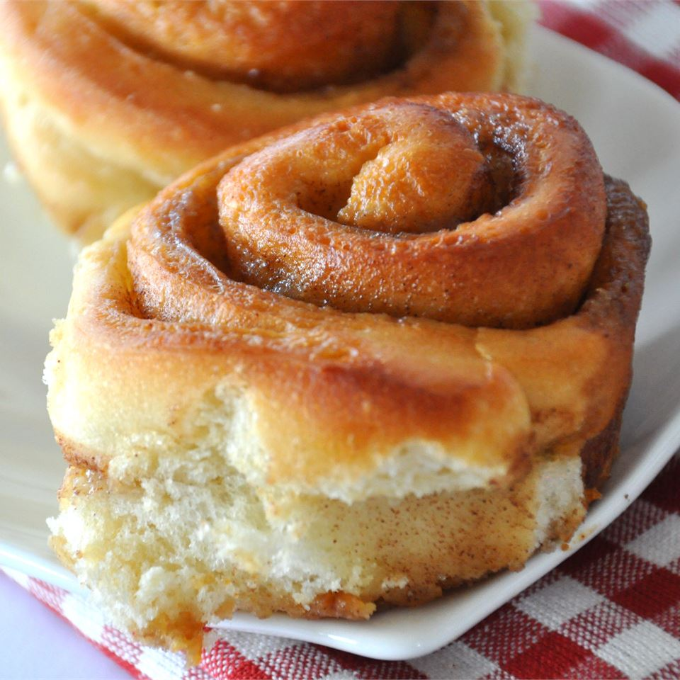

Buttermilk Cinnamon Rolls

Description
Easy, yeasted cinnamon rolls. A crowd always gathers when they come out of the oven.
Favorite activity: scraping the goo off the bottom of the pan.
Ingredients
- 2 x 0.25 ounce packages active dry yeast
- 1/4 cup of warm water (110 degrees F/45 degrees C)
- 1 1/2 cups of buttermilk
- 1/2 cup of vegetable oil
- 4 1/2 cups of all-purpose flour
- 1 teaspoon of salt
- 1/2 teaspoon of baking soda
- 1/2 cup of melted butter
- 1 1/4 cups of brown sugar
- 1 1/2 teaspoons of ground cinnamon
Steps
- In a large bowl, dissolve yeast in warm water.
Let stand until creamy, about 10 minutes.
In a small saucepan, heat the buttermilk until warm to the touch.
- Pour the buttermilk and oil into the yeast mixture; mix well.
Combine the flour, salt and baking soda.
Stir the flour mixture into the liquid 1 cup at a time, until a soft dough forms.
Turn dough out onto a lightly floured surface and knead 20 times.
Cover and let rest for 15 minutes.
In a small bowl, stir together the butter, brown sugar and cinnamon.
- On a lightly floured surface, roll dough out into a large rectangle.
Spread the brown sugar and butter mixture over the dough, roll up into a log and pinch the seam to seal.
Slice into 1 inch pieces and place cut side up in a lightly greased 10x15 baking pan.
Cover and let rise 30 minutes or cover and refrigerate overnight.
If baking immediately, preheat oven to 400 degrees F (200 degrees C).
- Bake in preheated oven for 20 to 25 minutes, until golden brown.
Let stand for 2 to 3 minutes before serving.